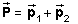
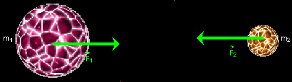
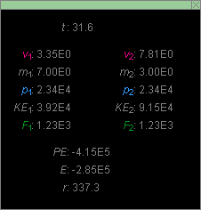

Prerequisites
Students should have a basic knowledge of vectors and be familiar with the concepts of speed, velocity, mass, and Newton's second law of motion.
Learning Outcomes
Students will be able to state the definition of momentum and the law of momentum conservation for isolated systems as well as Newton's third and second laws. They will be able to explain how the law of momentum conservation of an isolated system is a consequence of Newton's third and second laws of motion. They will be able to state Newton's law of universal gravitation and will be able to explain how this law combined with Newton's second law of motion can explain certain aspects of the motion of objects interacting gravitationally.
Instructions
Students should know how the applet functions, as described in Help and ShowMe.
The applet should be open. The step-by-step instructions in the following text are to be done in the applet. You may need to toggle back and forth between instructions and applet if your screen space is limited.
Momentum, Momentum Conservation, Newton's Third and Second Laws of Motion, Newton's Law of Universal GravitationGravitational Force of Interaction Between Two Planets and Newton's Third Law

Definition of Momentum
The momentum of a particle of mass m and velocityis defined as the product
= m
(1)
As the definition implies, momentum is a vector quantity. It is denoted by the symbol
The (total) momentum of a system of particles, denoted by a capital P with arrow, is defined as the vector sum of the momenta of the individual particles,
 .
Law of Momentum Conservation
Version A. The total momentum of an isolated system of particles is conserved.Version B. The total momentum of a system of particles is conserved if the total external force acting on the system is zero.
Comments. Version A is a special case of Version B. If a system is isolated, i.e., not interacting with anything external to the system, the system does not experience any external forces whatsoever so that the sum of such forces is obviously zero.
In Version B, the system does not have to be isolated but can be interacting with its environment. In this case, the total momentum of the system still is conserved, as long as the external forces add up to zero.
The law of momentum conservation is a consequence of Newton's third and second laws.
Newton's Third Law
If an object 1 exerts a force on another object 2, then object 2 also exerts a force on object 1. The two forces have the same magnitude and opposite directions.

Figure 1
Figure 1 illustrates Newton's third law for the case of two
gravitationally interacting objects.  1 is the force exerted on object 1 by object
2. 2 is the force exerted
on object 2 by object 1.
1 is the force exerted on object 1 by object
2. 2 is the force exerted
on object 2 by object 1.
Comments. Even though the objects have different masses, the forces the objects exert on each other have the same magnitude, as the green force vectors show.
Gravitational forces are long-range forces that are "felt" by the interacting objects even when the objects are very far apart. See Newton's Law of Universal Gravitation below. Newton's Third Law applies to forces whether they are long-range or short-range (contact forces).
Newton's Law of Universal Gravitation
Any two particles interact with each other gravitationally. Particle 1 exerts a force on Particle 2, and Particle 2 exerts a force on Particle 1. These forces are attractive and directed from particle to particle. If the particles have masses m1 and m2 and are a distance r apart, the magnitude F of either force is given byF = G m1m2 / r2,
where G is the constant of universal gravitation. In SI-units, G has the value
G = 6.67×10-11 N m2 kg-2.
Comments. The term "particle" in the statement above means "point particle", i.e., a particle of negligble extent. Real objects are extended objects. Their gravitational interaction is the result of the interactions of all the particles constituting the objects. The total gravitational force exerted on one extended object by another is the vector sum of the forces exerted on all the particles of the object by all the particles of the other.
One can prove that an extended object that is spherical in shape and has uniform mass density acts gravitationally as if all of its mass were concentrated at its center. Such an object can therefore be represented by a point particle at the object's center, where the point particle carries all of the extended object's mass.
Extended objects, e.g., the earth and the moon, will be treated here as if they were point particles located at the centers of these objects.
Newton's Second Law of Motion
The forces acting on a particle determine the particle's motion via Newton's Second Law of Motion. Newton stated the law in the form that
the vector sum of all forces acting on a particle is equal to the time-rate-of-change of the particle's momentum.
If net denotes the sum
of all forces (net force) acting on the particle, Newton's Second Law amounts to the
equation
net =
d/dt  (5)
(5)
where d/dt is
the time-rate-of-change of the particle's momentum. One can think of
/dt
If the mass m is constant, this equation, using Definition (1) of the momentum, can be rewritten as follows:
net =
d/dt =
d(m)/dt =
md/dt = m 
 (6)
(6)
where the time-rate-of-change of the velocity, d/dt, has been replaced by the acceleration .
In this form, Newton's Second Law in words says that
the sum of all forces acting on a particle is equal to the product of the particle's mass and the particle's acceleration.

Gravitational Force
of Interaction Between Two Planets and Newton's Third Law
Task 1. Reset  the applet.
the applet.
Set the mass of Planet 1 (Planet on the left) to 7,000. This will automatically set the mass of Planet 2 to 3,000. The combined mass of both planets is always 10,000. PLAY and PAUSE the motion until the planets are a distance of approximately r = 338.4 apart. You can try to get quite close to this value by pausing the motion before r reaches this value and then moving towards it using the STEP button.
Calculate the magnitudes F1 and F2 of the gravitational forces the planets exert on each other. Here the calculation will be done for r = 338.4, but you should carry out the calculation also for the r-value at which you paused the motion. The Data box will provide the answer corresponding to your value of r.
Answer.
Newton's Third Law implies F1 = F2. Let us denote this common magnitude by F.
The units of all physical quantities are left unspecified in this applet, and the value of G is taken to be equal to 6.67. Substituting this value into Equation (3), along with the values of the masses of the planets and their separation center-to-center (the planets are replaced by mass points), gives for the magnitude F the value
F = G
m1m2 / r2 =
6.67×7000×3000 / 338.42 =
1.223×103.  (7)
(7)
Task 2. REWIND the applet. Adjust the masses of the two planets so that F1 = F2 = F has maximum magnitude. Try to explain your observation.
Answer. F is greatest when the two masses are equal, i.e., when both are equal to 5000.
This can be explained as follows. Remember that the total mass of the two planets is fixed at 10,000 and that the distance between the two planets is constant while the individual masses are being varied.
If the distance r is constant, Newton's law of universal gravitation implies that F is proportional to the product m1m2 of the two masses. This product is zero when either m1 or m2 is zero. When m1 and m2 are both greater than zero and less than 10,000, the product is positive. (If one of the masses is greater than 10,000, the other would have to be negative so that the sum of the masses stays equal to 10,000. This would, of course, not be possible in reality.)
Thus, F is zero when m1 is either 0 or 10,000 and it is positive if m1 is in between these limits. This implies that F has a maximum in the range 0 < m1 < 10,000. By symmetry, this maximum must be at m1 = 5000.
A second argument involves an algebraic demonstration. The product m1m2 can be written
 m1m2 =
m1(10,000 - m1) = -
m12 + 10,000m1
m1m2 =
m1(10,000 - m1) = -
m12 + 10,000m1
 = -
m12 + 10,000m1 -
5,0002 + 5,0002
= -
m12 + 10,000m1 -
5,0002 + 5,0002
 =
- (m1 - 5,000)2 + 5,0002.
=
- (m1 - 5,000)2 + 5,0002.
 (8)
(8)
The right-hand side of Equation (8) when plotted against m1 gives a parabola that goes downward on either side of its peak, which is at m1 = 5,000. It goes downward because of the minus sign in front of the quadratic term. Thus, m1m2 has a peak at m1 = m2 = 5,000.
To corroborate that Equation (8) is correct, check that it gives the value zero for m1m2 when m1 = 0 or 10,000.
Also note that Equation (8) immediately gives the maximum value of m1m2 as 5,0002. Just substitute m1 = 5,000.
The System's Motion
and Changes in Velocity and Momentum
Task 1. With the masses still at m1 = 7000 and m2 = 3000, start from the point where you paused the motion earlier. Here this will be assumed to have been at r = 338.4 at t = 31.5. At this point, the Data box displays the values shown in Figure 2 below.
Figure 2
Click the STEP button once to advance the motion by 0.1 in time to t = 31.6. At this instant, the Data box displays the values shown in Figure 3 below.

Figure 3
Calculate the magnitudes of velocity and momentum of the planets and their separation at t = 31.6 from the data at t = 31.5.
Hint: You may take the forces to be constant during this short time interval. Comparing the values of the forces as displayed in Figures 2 and 3, you can see that this is not a bad assumption. Also see Comment 1 in the following Answer.
Answer.
Momenta. Newton's second law of motion (5) applied to Planet 1 gives the equation
1 =
d1/dt  (9)
(9)
Solving for the momentum change d1 we get
d1 =
1dt  (10)
(10)
Using this equation for the short but finite time invertal from t = 31.5 to t = 31.6 and working only with the magnitudes of the vectors gives
dp1 =
F1dt = 1.22×103×0.1
= 1.22×102 = 0.01×104.  (11)
(11)
Adding this value to the value p1 = 2.33×104 at t = 31.5, because the force is in the same direction as the momentum and the momentum's magnitude therefore increasing, gives for the magnitude of the momentum at t = 31.6 the value
p1 = 2.33×104 +
0.01×104 = 2.34×104. (12)
(12)
Comment 1. To the precision of three significant figures used in this calculation, the assumption of constant force throughout the given time interval in Equations (11) is perfectly valid. As you can see from the calculation, the third significant digit in the force, which is the one that is changing during this time interval, has no effect on the outcome of the calculation because multiplication by the time factor of 0.1 in Equations (11) suppresses this digit, and even the one before.
The momentum of Planet 2 at t = 31.6 can be calculated similarly. Since the force acting on Planet 2 has the same magnitude as the force acting on Planet 1, by Newton's Third Law, the magnitude dp2 of the momentum change for Planet 2 is the same as for Planet 1 and is given by Result (11).
Since the force acting on Planet 2 is in the direction of the planet's momentum (by Newton's Third Law, this force is opposite to that acting on Planet 1, but the momentum of Planet 2 also is opposite to that of Planet 1), the magnitude of the momentum of Planet 2, like that of Planet 1, increases to the same value (12) as the momentum of Planet 1.
Since the momenta of the two planets and the momentum changes
d1 and d2 are oppositely directed, the sum of these
changes is zero,
d1 +
d2 = 0.  (13)
(13)
This means that the total momentum of the two-planet system does not change. We have proved the law of momentum conservation for the system! The same argument can be applied for any other time interval. Note how both Newton's third and second laws enter into the argument.
Comment 2. At t = 31.6, the momenta of the two planets have different magnitudes than at t = 31.5. However, at both times the two magnitudes are equal to each other and the momenta are oppositely directly, so that at both times the total momentum is zero and therefore conserved.
Speeds and Velocities. The speed of Planet 1 at t = 31.6 is obtained by dividing the magnitude of the momentum by the mass of the planet. Thus,
v1 = p1 /
m1 = 2.34×104/7000 = 3.34 ,  t = 31.6.
t = 31.6. (14)
(14)
Comment 3. This differs by "1" in the last digit from the value shown in Figure 3. This is due to round-off error. Suppose a value of p1 = 2.343 instead of 2.340 had been used in Calculation (14). The result for v1 would have been 3.347 which rounds up to 3.35, the value given in Figure 3. Using only three significant digits for p1 instead of 4 can lead to this kind of an error.
The speed of Particle 2 at t = 31.6 is calculated similarly as
v2 = p2 /
m1 = 2.34×104/3000 = 7.80 ,  t = 31.6.
t = 31.6. (15)
(15)
Again, this differs in the last significant digit from the value shown in Figure 3. Using 2.343 for p2 would give 7.81 for v2, in agreement with the value in Figure 3.
The velocities of the planets at t = 31.6 are oppositely directly and have the magnitudes given by Results (14) and (15).
Separation of the Planets. The separation r between the planets changes because both planets move. Since one planet is moving to the right and the other one to the left, r changes at a rate equal to the negative sum of the speeds of both planets. We must take the negative of the sum because r is decreasing and its rate-of-change therefore negative.
Making a similar assumption to that used in calculating the momentum change earlier, we assume that the speeds are constant during the short 0.1-time interval. The mistake will be negligible to within the precision used here. (See Comment 4 below.) Thus, from the equation for the time-rate-of-change of the separation r,
dr / dt = -(v1 +
v2),  (16)
(16)
we get
dr = - (v1 +
v2) dt = -(3.33 + 7.77)×0.1 = -1.11
.  (17)
(17)
Adding this change to the value of r at t = 31.5 gives at t = 31.6 the value
r = 338.4 - 1.11 = 337.3 ,  t = 31.6.
t = 31.6. (17)
(17)
This agrees with the value shown in Figure 3 to the last significant digit.
Comment 4. In Calculation (17) the values for v1 and v2 at t = 31.5 are used. We could also have used the values at t = 31.6 without affecting the result within the number of significant digits considered. This justifies the assumption of constant speeds.
Final Comment. The kind of approximate numerical calculations used here to calculate the values of physical quantities at t = 31.6 from those at t = 31.5 using the forces as the physical input, shows how the forces determine the motion of a system. Although calculating in this manner involves some inaccuracies, these can be reduced by choosing smaller time steps. In principle, by making the time steps infinitesimally small, the calculation can be made perfectly exact. This limiting process underlies the calculus operation called "integration". What we have done here is a "numerical integration". In simulating motions on a computer, one has to perform numerical integrations, which always involve a certain degree of approximation.
Challenge Task. Select the Pause-Before-Collision radio button and let the motion continue until the planets touch, just before collision. Observe the total time elapsed from the start of the motion. Repeat the motion with different planet masses, and again observe the total time elapsed up to contact. Do this a third time, with yet another set of planet masses.
What do you observe about the times elapsed? Explain your observation.
Answer. The same amount of time, 45.2, elapses no matter what the masses are. This can be explained as follows.
Note that the applet is designed so that the separations at the start and at the moment of contact are independent of the masses of the planets. Verify this if you did not already observe it yourself.
The magnitudes a1 and a2 of the planets' accelerations when the planets are a distance r apart, center to center, are determined by combining Newton's second law of motion with Newton's universal law of gravitation. Thus, for Planet 1,
F1 = G
m1m2 / r2 =
m1a1 .  (18)
(18)
Canceling a factor of m1 on both sides of the equation gives an equation for a1,
a1 = G
m2 / r2 .  (19)
(19)
Similarly, derive the following equation for a2:
a2 = G
m1 / r2 .  (20)
(20)
The change in the separation r is the result of both planets moving. As in the earlier calculation of a change in r, the acceleration with which r changes is the negative sum of the magnitudes of the two planets' accelerations,
-(a1 + a2) =
-(G m2 / r2 + G
m1 / r2) = -G
(m1+m2) /
r2.  (21)
(21)
At a given separation r, this acceleration depends only on the sum of the masses of the two planets, not on the individual masses separately. Since the sum of the planets is constant in our set-up, the acceleration of the separation r is independent of the masses of the planets. This explains why it takes the same amount of time for the planets to have their separation reduced by a fixed amount.